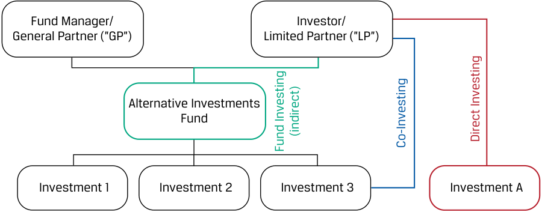
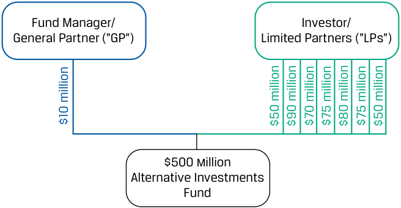
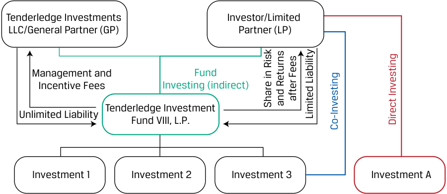
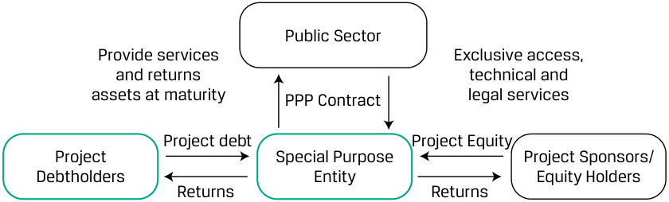
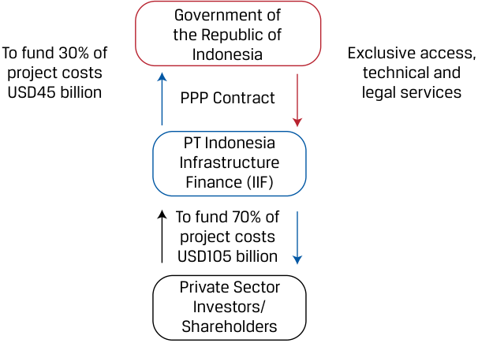
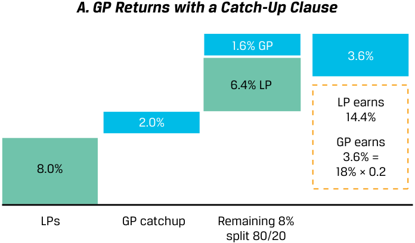
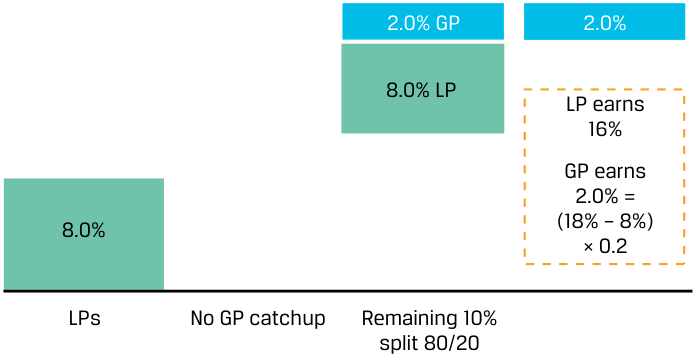
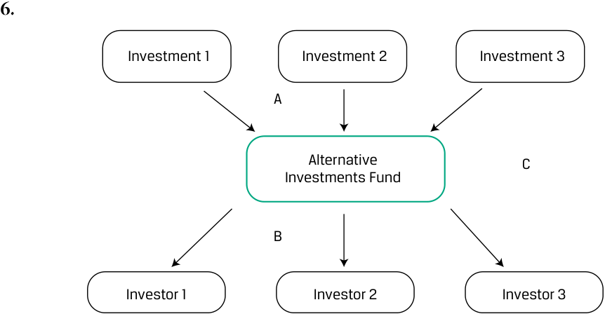

Learning Module 1 Alternative Investment Features, Methods, and Structures - Part 2: Alternative Investment Structures
Volume 8: Alternative Investments
Learning Module 1 Alternative Investment Features, Methods, and Structures
Part 2/2: Alternative Investment Structures (PDF Pages 27–40)
Tập 8: Đầu tư Thay thế (Volume 8: Alternative Investments)
Học phần 1: Đặc điểm, Phương thức và Cấu trúc Đầu tư Thay thế (Learning Module 1: Alternative Investment Features, Methods, and Structures)
Phần 2/2: Cấu trúc Đầu tư Thay thế (Alternative Investment Structures) (Trang PDF 27–40)
| 1. Fund investing | Fund investing gives investors with limited resources or experience an entrance into alternative investing. i |
|---|---|
| 2. Co-investing | Investors who have better specific skills and greater ability to allocate investments to individual assets may select a more active investment approach while retaining manager involvement. This results in lower fees for the investor than for a purely fund-based approach. Also, co-investors select and manage an investment jointly with a general fund manager, which potentially gives them greater control and higher returns than they could earn in a fund-only structure. |
| 3. Direct investing | Direct investing offers investors flexibility and control when it comes to choosing their investments, selecting their preferred methods of financing, and planning their approach. |
| 1. Đầu tư qua quỹ (Fund investing) | Đầu tư qua quỹ mang lại cho các nhà đầu tư có nguồn lực hoặc kinh nghiệm hạn chế một cánh cửa bước vào lĩnh vực đầu tư thay thế. |
|---|---|
| 2. Đồng đầu tư (Co-investing) | Các nhà đầu tư có kỹ năng chuyên biệt tốt hơn và khả năng phân bổ vốn đầu tư vào các tài sản riêng lẻ lớn hơn có thể lựa chọn phương pháp tiếp cận đầu tư chủ động hơn trong khi vẫn duy trì sự tham gia của nhà quản lý quỹ. Điều này dẫn đến mức phí thấp hơn cho nhà đầu tư so với phương pháp tiếp cận thuần túy dựa trên quỹ. Ngoài ra, các nhà đồng đầu tư lựa chọn và quản lý một khoản đầu tư chung với một nhà quản lý quỹ chung, điều này có khả năng mang lại cho họ quyền kiểm soát lớn hơn và tỷ suất sinh lợi cao hơn so với mức họ có thể kiếm được trong cấu trúc chỉ đầu tư qua quỹ. |
| 3. Đầu tư trực tiếp (Direct investing) | Đầu tư trực tiếp mang lại cho các nhà đầu tư sự linh hoạt và quyền kiểm soát khi lựa chọn các khoản đầu tư của mình, lựa chọn phương thức tài trợ vốn ưa thích và lập kế hoạch cho phương pháp tiếp cận của họ. |
ALTERNATIVE INVESTMENT STRUCTURES
CÁC CẤU TRÚC ĐẦU TƯ THAY THẾ (ALTERNATIVE INVESTMENT STRUCTURES)
4
4
describe investment ownership and compensation structures commonly used in alternative investments
mô tả các cấu trúc sở hữu đầu tư và cấu trúc thù lao (ownership and compensation structures) thường được sử dụng trong đầu tư thay thế
Beyond the direct or indirect method of investing in alternatives, the illiquidity, complexity, and long-term nature of these investments require more complex structures to bridge potential gaps between manager and investor interests. Alternative investment structures may explicitly address both the roles and responsibilities of investors and managers to address these gaps. In addition, alternative investment structures tailor the distribution of returns between these two parties to better align the incentives (or interests) between manager and investor.
Vượt ra ngoài phương thức đầu tư trực tiếp hay gián tiếp vào các tài sản thay thế, tính kém thanh khoản, sự phức tạp và bản chất dài hạn của các khoản đầu tư này đòi hỏi những cấu trúc phức tạp hơn nhằm thu hẹp những khoảng cách tiềm ẩn giữa lợi ích của nhà quản lý và nhà đầu tư. Các cấu trúc đầu tư thay thế có thể quy định rõ ràng cả vai trò và trách nhiệm của các nhà đầu tư lẫn các nhà quản lý để giải quyết những khoảng cách này. Ngoài ra, các cấu trúc đầu tư thay thế thiết kế riêng việc phân phối tỷ suất sinh lợi giữa hai bên nhằm gắn kết tốt hơn các động lực (hoặc lợi ích) giữa nhà quản lý và nhà đầu tư.
For example, managers may require investors to be responsible for future capital contributions, while investors may place restrictions on manager investment selection to avoid conflicts of interest or hostile takeovers among other investment criteria. Performance-based compensation structures, which can include minimum return requirements for investors, delayed payouts, and/or the ability to reclaim incentive compensation in the event of poor fund performance, encourage managers to maximize returns in the best interest of investors.
Ví dụ, các nhà quản lý có thể yêu cầu nhà đầu tư chịu trách nhiệm cho các khoản góp vốn trong tương lai (future capital contributions), trong khi các nhà đầu tư có thể đặt ra các hạn chế đối với việc lựa chọn khoản đầu tư của nhà quản lý nhằm tránh xung đột lợi ích (conflicts of interest) hoặc các thương vụ thâu tóm thù địch (hostile takeovers) cùng các tiêu chí đầu tư khác. Các cấu trúc thù lao dựa trên hiệu quả hoạt động (performance-based compensation structures), có thể bao gồm các yêu cầu về tỷ suất sinh lợi tối thiểu cho nhà đầu tư, chi trả thù lao trả chậm (delayed payouts), và/hoặc quyền thu hồi lại khoản thù lao khuyến khích (reclaim incentive compensation) trong trường hợp quỹ hoạt động kém hiệu quả, sẽ khuyến khích các nhà quản lý tối đa hóa tỷ suất sinh lợi vì lợi ích tốt nhất của các nhà đầu tư.
Alternative Investment Ownership and Compensation Structures
Cấu trúc Sở hữu và Thù lao trong Đầu tư Thay thế (Alternative Investment Ownership and Compensation Structures)
In this section, we discuss the ownership and compensation structures of alternative investments.
Trong phần này, chúng ta thảo luận về các cấu trúc sở hữu và cấu trúc thù lao của các khoản đầu tư thay thế.
Ownership Structures
Cấu trúc Sở hữu (Ownership Structures)
Alternative investment vehicles often take the form of partnerships in order to maximize flexibility in the investment structure to allocate business risk and return and to distribute special responsibilities between investors and managers as required. Limited partnerships, introduced in a corporate issuer lesson, involve at least one general
Các phương tiện đầu tư thay thế (alternative investment vehicles) thường mang hình thức công ty hợp danh (partnerships) nhằm tối đa hóa sự linh hoạt trong cấu trúc đầu tư để phân bổ rủi ro và tỷ suất sinh lợi kinh doanh cũng như phân phối các trách nhiệm đặc biệt giữa các nhà đầu tư và nhà quản lý theo yêu cầu. Các công ty hợp danh hữu hạn (limited partnerships), đã được giới thiệu trong bài học về tổ chức phát hành doanh nghiệp, bao gồm ít nhất một thành viên hợp danh
partner (GP) with theoretically unlimited liability who is responsible for managing the fund. Limited partners (LPs) are outside investors who own a fractional interest in the partnership based on the amount of their initial investment and the terms set out in the partnership documentation. Exhibit 4 shows the basic GP/LP structure together with the various investment approaches (fund, co-investment, direct) introduced earlier.
(general partner – GP) với trách nhiệm vô hạn về mặt lý thuyết (theoretically unlimited liability), người chịu trách nhiệm quản lý quỹ. Các thành viên góp vốn hữu hạn (limited partners – LPs) là các nhà đầu tư bên ngoài sở hữu một phần lợi ích (fractional interest) trong công ty hợp danh dựa trên số tiền đầu tư ban đầu của họ và các điều khoản được quy định trong bộ hồ sơ hợp danh. Bảng minh họa 4 cho thấy cấu trúc GP/LP cơ bản cùng với các phương pháp tiếp cận đầu tư khác nhau (đầu tư qua quỹ, đồng đầu tư, đầu tư trực tiếp) đã được giới thiệu trước đó.
Exhibit 4: Basic GP/LP Structure and Various Investment Approaches
Bảng minh họa 4: Cấu trúc GP/LP Cơ bản và Các Phương pháp Tiếp cận Đầu tư Khác nhau (Exhibit 4: Basic GP/LP Structure and Various Investment Approaches)

Chú thích hình ảnh: Nhà quản lý Quỹ / Thành viên Hợp danh ("GP") và Nhà đầu tư / Thành viên Góp vốn Hữu hạn ("LP") cùng tham gia vào Quỹ Đầu tư Thay thế (Alternative Investments Fund) (đầu tư gián tiếp – indirect). Từ đó Quỹ rót vốn vào Khoản đầu tư 1, 2, 3 (Fund Investing). LP có thể Đồng đầu tư (Co-Investing) vào Khoản đầu tư 3, hoặc Đầu tư trực tiếp (Direct Investing) vào Khoản đầu tư A.
LPs commit to future investments, and the upfront cash outflow can be a small portion of their total commitment to the fund. Funds set up as limited partnerships typically have a limit on the number of LPs allowed to invest in the fund. LPs play passive roles and are not involved with the management of the fund (although co-investment rights allow for the LPs to make additional direct investments in the portfolio companies); the operations and decisions of the fund are controlled solely by the GP.
Các LP cam kết cho các khoản đầu tư trong tương lai, và dòng tiền chi ra trả trước (upfront cash outflow) có thể chỉ chiếm một phần nhỏ trong tổng mức cam kết của họ đối với quỹ. Các quỹ được thiết lập dưới dạng công ty hợp danh hữu hạn thường có giới hạn về số lượng LP được phép đầu tư vào quỹ. Các LP đóng vai trò thụ động (passive roles) và không tham gia vào việc quản lý quỹ (mặc dù quyền đồng đầu tư cho phép các LP thực hiện thêm các khoản đầu tư trực tiếp vào các công ty trong danh mục đầu tư); các hoạt động và quyết định của quỹ được kiểm soát hoàn toàn bởi GP.
Limited partners (LPs) have their liability capped at the amount of their investment in the partnership, as shown in Exhibit 5.
Các thành viên góp vốn hữu hạn (LPs) có mức trách nhiệm pháp lý được giới hạn ở số tiền họ đầu tư vào công ty hợp danh, như được thể hiện trong Bảng minh họa 5.
Exhibit 5: Example Limited Partnership Structure
Bảng minh họa 5: Ví dụ về Cấu trúc Công ty Hợp danh Hữu hạn (Exhibit 5: Example Limited Partnership Structure)

Chú thích hình ảnh: Quỹ Đầu tư Thay thế quy mô 500 triệu USD ($500 million Alternative Investments Fund) bao gồm: - Nhà quản lý Quỹ / Thành viên Hợp danh ("GP"): Góp 10 triệu USD. - Các Nhà đầu tư / Thành viên Góp vốn Hữu hạn ("LPs"): 7 nhà đầu tư LP góp lần lượt 50 triệu USD, 90 triệu USD, 70 triệu USD, 75 triệu USD, 80 triệu USD, 75 triệu USD, và 50 triệu USD.
A restricted number of limited partners hold a fractional interest in the fund. LP investors must generally meet certain minimum regulatory net worth, institutional, or other requirements, as so-called accredited investors , to access these investments, which are less regulated than general public offerings. The GP (Tenderledge Investments LLC in Exhibit 6) agrees to manage the fund’s operations under an agreed standard of care and perform such activities as buying or selling assets, borrowing funds, establishing reserves, or entering into contracts on behalf of the fund.
Một số lượng hạn chế các thành viên góp vốn hữu hạn nắm giữ một phần lợi ích trong quỹ. Các nhà đầu tư LP nhìn chung phải đáp ứng một số yêu cầu tối thiểu theo quy định pháp lý về giá trị tài sản ròng (net worth), tư cách định chế, hoặc các yêu cầu khác, với tư cách là cái gọi là nhà đầu tư đạt chuẩn / nhà đầu tư chuyên nghiệp (accredited investors), để được tiếp cận các khoản đầu tư này, vốn ít chịu sự điều tiết hơn so với các đợt chào bán đại chúng thông thường. GP (Tenderledge Investments LLC trong Bảng minh họa 6) đồng ý quản lý các hoạt động của quỹ theo một tiêu chuẩn cẩn trọng đã thỏa thuận (agreed standard of care) và thực hiện các hoạt động như mua hoặc bán tài sản, vay vốn, thiết lập các quỹ dự trữ, hoặc ký kết các hợp đồng thay mặt cho quỹ.
Exhibit 6: Limited Partnership (Tenderledge Investment Fund)
Bảng minh họa 6: Công ty Hợp danh Hữu hạn (Quỹ Đầu tư Tenderledge) (Exhibit 6: Limited Partnership (Tenderledge Investment Fund))

Chú thích hình ảnh: - Tenderledge Investments LLC / Thành viên Hợp danh (GP): Chịu trách nhiệm vô hạn (Unlimited Liability), nhận Phí quản lý và Phí khuyến khích (Management and Incentive Fees) từ quỹ Tenderledge Investment Fund VIII, L.P. - Nhà đầu tư / Thành viên Góp vốn Hữu hạn (LP): Đầu tư qua quỹ (gián tiếp), chịu trách nhiệm hữu hạn (Limited Liability), và chia sẻ rủi ro cùng tỷ suất sinh lợi sau khi trừ phí (Share in Risk and Returns after Fees). LP cũng có thể Đồng đầu tư (Co-Investing) vào Khoản đầu tư 3 hoặc Đầu tư trực tiếp (Direct Investing) vào Khoản đầu tư A.
A GP may manage multiple funds at a time. A limited partnership agreement (LPA) establishes terms of an LP as governed by a limited partnership agreement.
Một GP có thể quản lý nhiều quỹ cùng một lúc. Một thỏa thuận hợp danh hữu hạn (limited partnership agreement – LPA) thiết lập các điều khoản của một công ty hợp danh hữu hạn dưới sự chi phối của thỏa thuận hợp danh hữu hạn đó.
Key features of an LPA include the distribution of profits and losses (covered in detail below); manager roles and responsibilities, such as investment criteria and restrictions; and terms governing transfers, withdrawals, and dissolution of the agreement.
Các đặc điểm chính của một LPA bao gồm việc phân phối lợi nhuận và khoản lỗ (được trình bày chi tiết dưới đây); vai trò và trách nhiệm của nhà quản lý, chẳng hạn như các tiêu chí và hạn chế đầu tư; và các điều khoản chi phối việc chuyển nhượng, rút vốn và giải thể thỏa thuận.
Adjustments to LP terms are sometimes made to address the unique legal, regulatory, or reporting requirements of a specific investor. In this case, a supplemental document known as a side letter is issued between a GP and one or more LPs with terms that override or modify the original LPA terms. These terms might include such features as increased investor ability to transfer investments to a related or successor fund; first right of refusal and other similar clauses to outline potential treatment (regarding fees, co-investment rights, secondary sales, and potentially other matters) in comparison to other LPs; ability to forgo a contractual capital contribution (known as an excusal right); or ability to receive additional investment reporting. One feature of a side letter might include a “most favored nation” clause ensuring any more favorable or additional terms negotiated outside of the LPA with other investors will also apply to a particular LP. The customized features of the LPA and any side letters stand in contrast to a standardized indenture applicable to all bond investors in the case of public fixed-income securities.
Các điều chỉnh đối với các điều khoản LP đôi khi được thực hiện để giải quyết các yêu cầu đặc thù về pháp lý, quy định hoặc báo cáo của một nhà đầu tư cụ thể. Trong trường hợp này, một văn bản bổ sung được gọi là thư thỏa thuận phụ (side letter) được ban hành giữa một GP và một hoặc nhiều LP với các điều khoản ghi đè hoặc sửa đổi các điều khoản gốc của LPA. Các điều khoản này có thể bao gồm những đặc điểm như gia tăng khả năng của nhà đầu tư trong việc chuyển nhượng các khoản đầu tư sang một quỹ liên kết hoặc quỹ kế nhiệm; quyền ưu tiên mua trước (first right of refusal) và các điều khoản tương tự khác nhằm phác thảo cách thức đối xử tiềm năng (liên quan đến phí, quyền đồng đầu tư, bán thứ cấp, và có thể là các vấn đề khác) so với các LP khác; quyền từ chối thực hiện một khoản góp vốn theo hợp đồng (được gọi là quyền miễn trừ góp vốn – excusal right); hoặc quyền nhận thêm các báo cáo đầu tư bổ sung. Một đặc điểm của thư thỏa thuận phụ (side letter) có thể bao gồm điều khoản “ối huệ quốc” (“most favored nation” clause) đảm bảo rằng bất kỳ điều khoản ưu đãi hơn hoặc bổ sung nào được đàm phán bên ngoài LPA với các nhà đầu tư khác cũng sẽ được áp dụng cho một LP cụ thể đó. Các đặc điểm tùy chỉnh của LPA và bất kỳ thư thỏa thuận phụ nào hoàn toàn đối lập với một khế ước trái phiếu tiêu chuẩn hóa (standardized indenture) áp dụng cho tất cả các nhà đầu tư trái phiếu trong trường hợp chứng khoán thu nhập cố định đại chúng.
Different specialized structures are commonly adopted for other alternative investments. For example, infrastructure investors frequently enter into public–private partnerships, which are agreements between the public sector and the private sector to finance, build, and operate public infrastructure, as shown in Exhibit 7. Exhibit 8 shows the PPP structure for PT Indonesia Infrastructure Finance (IIF), as discussed in Example 2.
Các cấu trúc chuyên biệt khác nhau thường được áp dụng cho các khoản đầu tư thay thế khác. Ví dụ, các nhà đầu tư cơ sở hạ tầng thường xuyên tham gia vào các quan hệ đối tác công – tư (public–private partnerships – PPP), vốn là các thỏa thuận giữa khu vực công và khu vực tư nhân để tài trợ, xây dựng và vận hành cơ sở hạ tầng công cộng, như được thể hiện trong Bảng minh họa 7. Bảng minh họa 8 cho thấy cấu trúc PPP của PT Indonesia Infrastructure Finance (IIF), như đã thảo luận trong Ví dụ 2.
Exhibit 7: Public–Private Partnership
Bảng minh họa 7: Quan hệ Đối tác Công – Tư (Exhibit 7: Public–Private Partnership)

Chú thích hình ảnh: Khu vực Công (Public Sector) và Thực thể Mục đích Đặc biệt (Special Purpose Entity – SPE) ký kết Hợp đồng PPP (PPP Contract): SPE cung cấp dịch vụ và hoàn trả tài sản khi đáo hạn (Provide services and returns assets at maturity), còn Khu vực Công cấp quyền tiếp cận độc quyền, dịch vụ kỹ thuật và pháp lý (Exclusive access, technical and legal services). SPE huy động Nợ dự án (Project debt) từ Chủ nợ dự án (Project Debtholders) và Vốn cổ phần dự án (Project Equity) từ Nhà tài trợ dự án / Chủ sở hữu vốn cổ phần (Project Sponsors / Equity Holders), sau đó chi trả Tỷ suất sinh lợi (Returns) cho cả hai bên.
Exhibit 8: Public–Private Partnership Structure of IIF
Bảng minh họa 8: Cấu trúc Quan hệ Đối tác Công – Tư của IIF (Exhibit 8: Public–Private Partnership Structure of IIF)

Chú thích hình ảnh: Chính phủ Cộng hòa Indonesia (Government of the Republic of Indonesia) tài trợ 30% chi phí dự án (45 tỷ USD) và cấp quyền tiếp cận độc quyền, dịch vụ kỹ thuật và pháp lý thông qua Hợp đồng PPP (PPP Contract) với PT Indonesia Infrastructure Finance (IIF). Các Nhà đầu tư / Cổ đông Khu vực Tư nhân (Private Sector Investors/Shareholders) tài trợ 70% chi phí dự án (105 tỷ USD) vào IIF.
Infrastructure projects often involve a special purpose entity that raises borrowed and ownership capital for the construction and operation of a specific road, bridge, or other long-lived asset under the terms of a concession agreement, after which the asset is sold or returned to a public sector entity.
Các dự án cơ sở hạ tầng thường liên quan đến một thực thể mục đích đặc biệt (special purpose entity – SPE) đứng ra huy động vốn vay và vốn chủ sở hữu để xây dựng và vận hành một con đường, cây cầu, hoặc tài sản có thời gian sử dụng lâu dài cụ thể khác theo các điều khoản của một thỏa thuận nhượng quyền (concession agreement), sau thời hạn đó tài sản sẽ được bán hoặc hoàn trả lại cho một đơn vị thuộc khu vực công.
Real estate or natural resource fund investors are often classified as unitholders in what is referred to as a master limited partnership (MLP) , which has similar features to the limited partnership described earlier but is usually a more liquid investment that is often publicly traded. Other forms of more liquid investments in alternative assets are real estate investment trusts (REITs), commodity funds, and various exchange-traded funds (ETFs). In the case of direct real estate investments, joint ventures are also a common partnership structure. Infrastructure and real estate will be discussed further in a subsequent alternative investment learning module.
Các nhà đầu tư vào quỹ bất động sản hoặc tài nguyên thiên nhiên thường được phân loại là người nắm giữ chứng chỉ quỹ (unitholders) trong một cấu trúc được gọi là công ty hợp danh hữu hạn đại chúng (master limited partnership – MLP), có các đặc điểm tương tự như công ty hợp danh hữu hạn đã mô tả trước đó nhưng thường là một khoản đầu tư có tính thanh khoản cao hơn và thường được giao dịch đại chúng. Các hình thức đầu tư có tính thanh khoản cao hơn khác vào tài sản thay thế là quỹ tín thác đầu tư bất động sản (real estate investment trusts – REITs), quỹ hàng hóa thương phẩm (commodity funds), và các quỹ hoán đổi danh mục (exchange-traded funds – ETFs) khác nhau. Trong trường hợp đầu tư bất động sản trực tiếp, liên doanh (joint ventures) cũng là một cấu trúc hợp tác phổ biến. Cơ sở hạ tầng và bất động sản sẽ được thảo luận sâu hơn trong một học phần đầu tư thay thế tiếp theo.
Compensation Structures
Cấu trúc Thù lao (Compensation Structures)
The asymmetry in information between the general partner, with specialized knowledge and control, and the limited partners in alternative investments means that more complex compensation structures are usedto better align general and limited partner incentives. Most funds that own public equity or debt securities charge management fees as a fixed percentage of assets under management. Alternative investment funds, in contrast, usually combine a higher management fee (often 1%–2% of assets under management) with a performance fee (also referred to as an incentive fee or carried interest ) based on a percentage of periodic fund returns.
Sự bất cân xứng thông tin (asymmetry in information) giữa thành viên hợp danh (GP), người có kiến thức chuyên môn sâu và quyền kiểm soát, với các thành viên góp vốn hữu hạn (LPs) trong các khoản đầu tư thay thế đồng nghĩa với việc các cấu trúc thù lao phức tạp hơn được sử dụng để gắn kết tốt hơn lợi ích động lực giữa thành viên hợp danh và thành viên góp vốn hữu hạn. Hầu hết các quỹ sở hữu chứng khoán nợ hoặc vốn cổ phần đại chúng đều tính phí quản lý theo một tỷ lệ phần trăm cố định trên tổng tài sản đang quản lý (assets under management – AUM). Ngược lại, các quỹ đầu tư thay thế thường kết hợp một mức phí quản lý cao hơn (thường là 1%–2% trên tài sản đang quản lý) với một khoản phí hiệu quả hoạt động (performance fee) (còn được gọi là phí khuyến khích – incentive fee hoặc lợi ích phân chia – carried interest) dựa trên một tỷ lệ phần trăm của tỷ suất sinh lợi định kỳ của quỹ.
While hedge funds and REITs typically charge a management fee on assets under management, private equity funds often levy this fee on committed capital , which consists of the total amount that LPs have promised to fund future investments. Private equity funds raise committed capital and draw down on those commitments, generally over three to five years, when they have a specific investment to make. The life of a typical private equity fund is 10 years. Note that the management fee is typically based on committed capital, not invested capital; the committed-capital basis for management fees is an important distinction from hedge funds, whose management fees are based on assets under management (AUM). Using committed capital as the basis for management fee calculations reduces the incentive for GPs to deploy the committed capital as quickly as possible (in order to increase near-term management fees). This allows the GPs to be selective about deploying capital into investment
Trong khi các quỹ phòng hộ (hedge funds) và REITs thường tính phí quản lý dựa trên tài sản đang quản lý (AUM), thì các quỹ vốn cổ phần tư nhân (private equity funds) thường thu khoản phí này dựa trên vốn cam kết (committed capital), bao gồm tổng số tiền mà các LP đã hứa sẽ tài trợ cho các khoản đầu tư trong tương lai. Các quỹ vốn cổ phần tư nhân huy động vốn cam kết và giải ngân từng phần (draw down) trên các cam kết đó, nhìn chung trong vòng từ 3 đến 5 năm, khi họ có một khoản đầu tư cụ thể cần thực hiện. Vòng đời của một quỹ vốn cổ phần tư nhân điển hình là 10 năm. Lưu ý rằng phí quản lý thường dựa trên vốn cam kết (committed capital), chứ không phải vốn đã đầu tư (invested capital); cơ sở tính phí quản lý dựa trên vốn cam kết là một điểm khác biệt quan trọng so với các quỹ phòng hộ, nơi phí quản lý được tính dựa trên tài sản đang quản lý (AUM). Việc sử dụng vốn cam kết làm cơ sở để tính phí quản lý làm giảm động cơ của các GP trong việc giải ngân vốn cam kết càng nhanh càng tốt (nhằm làm tăng phí quản lý trong ngắn hạn). Điều này cho phép các GP có tính chọn lọc khi triển khai vốn vào các cơ hội đầu tư.
opportunities. In addition, since the GP has so much influence on the value of the assets, it would be inappropriate to pay management fees on the basis of the value of assets under management.
Performance fees are often subject to a minimum fund return or hurdle rate (also known as a “preferred return”), as well as other modifications, to align manager incentives as closely as possible with those of investors over long investment periods. Hurdle rate agreements sometimes distinguish between a hard hurdle rate , where the manager earns fees on annual returns in excess of the hurdle rate, or a soft hurdle rate , where the fee is calculated on the entire return when the hurdle is exceeded. With a soft hurdle, GPs are able to catch up performance fees once the hurdle threshold is exceeded.
Ngoài ra, vì GP có ảnh hưởng rất lớn đến việc định giá giá trị của các tài sản, sẽ là không phù hợp nếu trả phí quản lý dựa trên cơ sở giá trị tài sản đang quản lý.
If we ignore management fees and assume a single-period fund rate of return of r , a hard hurdle rate of rh , and a GP performance fee ( p ) as a percentage of total return, then the GP’s rate of return ( rGP ) is as follows:
Phí hiệu quả hoạt động (performance fees) thường phải tuân theo một mức tỷ suất sinh lợi tối thiểu của quỹ hay tỷ suất sinh lợi tối thiểu (hurdle rate) (còn được gọi là “tỷ suất sinh lợi ưu đãi” – “preferred return”), cũng như các điều khoản sửa đổi khác, nhằm gắn kết lợi ích động lực của nhà quản lý càng sát càng tốt với lợi ích của các nhà đầu tư trong các giai đoạn đầu tư dài hạn. Các thỏa thuận về tỷ suất sinh lợi tối thiểu đôi khi phân biệt giữa tỷ suất sinh lợi tối thiểu cứng (hard hurdle rate), nơi nhà quản lý chỉ được hưởng phí tính trên phần tỷ suất sinh lợi hàng năm vượt quá mức tỷ suất sinh lợi tối thiểu, hoặc tỷ suất sinh lợi tối thiểu mềm (soft hurdle rate), nơi khoản phí được tính trên toàn bộ tỷ suất sinh lợi một khi vượt qua ngưỡng tỷ suất sinh lợi tối thiểu. Với mức tỷ suất sinh lợi tối thiểu mềm (soft hurdle), các GP có thể bắt kịp (catch up) phần phí hiệu quả hoạt động một khi vượt qua ngưỡng tối thiểu.
rGP = max[0, p ( r – rh )]. ~~(1)~~
For example, if a fund earns r of 18% over a period and receives a performance fee of 20% ( p ) of returns in excess of the hurdle rate, rh , of 8%, then rGP is equal to 2%:
Nếu chúng ta bỏ qua phí quản lý và giả định tỷ suất sinh lợi một kỳ của quỹ là $r$, mức tỷ suất sinh lợi tối thiểu cứng (hard hurdle rate) là $r_h$, và phí hiệu quả hoạt động của GP ($p$) tính bằng tỷ lệ phần trăm của tổng tỷ suất sinh lợi, thì tỷ suất sinh lợi của GP ($r_{GP}$) được xác định như sau:
2% = max[0, 20%(18% – 8%)].
Ví dụ, nếu một quỹ kiếm được $r$ bằng 18% trong một kỳ và nhận mức phí hiệu quả hoạt động là 20% ($p$) trên phần tỷ suất sinh lợi vượt quá mức tỷ suất sinh lợi tối thiểu, $r_h$, là 8%, thì $r_{GP}$ bằng 2%:
Performance fee modifications include rewarding managers for exceeding the hurdle rate or generating returns on specific deals or penalizing them by limiting or requiring the return of performance fees for declining performance over time. The acceleration of performance fees once a fund exceeds the soft hurdle rate is known as a catch-up clause , as illustrated in Exhibit 9. Under the catch-up clause using the prior example, the GP earns an immediate 2% (catch-up return of rcu ) once the hurdle is exceeded, resulting in a 1.6% higher return than without the catch-up feature. In other words, the LP will receive 100% of all cash distributions until it earns the hurdle rate of 8%. Then, the GP will receive 100% of distributions until the split of profit is 80%/20%. The remaining distributions will be split 80%/20%. The GP’s rate of return ( rGP ) from Equation 1 with a catch-up clause becomes
rGP = max[0, rcu + p ( r − rh − rcu )]. ~~(2)~~ 3.6% = max[0, 2.0% + 20%(18% – 8% – 2%)].
Các điều khoản sửa đổi phí hiệu quả hoạt động bao gồm việc thưởng cho các nhà quản lý khi vượt qua mức tỷ suất sinh lợi tối thiểu hoặc tạo ra tỷ suất sinh lợi trên các thương vụ cụ thể, hoặc phạt họ bằng cách giới hạn hay yêu cầu hoàn trả lại phí hiệu quả hoạt động khi hiệu quả suy giảm theo thời gian. Việc đẩy nhanh tốc độ hưởng phí hiệu quả hoạt động một khi quỹ vượt qua mức tỷ suất sinh lợi tối thiểu mềm được gọi là điều khoản bắt kịp (catch-up clause), như được minh họa trong Bảng minh họa 9. Theo điều khoản bắt kịp sử dụng ví dụ trước đó, GP được hưởng ngay lập tức 2% (tỷ suất sinh lợi bắt kịp là $r_{cu}$) một khi vượt qua ngưỡng tối thiểu, dẫn đến mức tỷ suất sinh lợi cao hơn 1,6% so với trường hợp không có tính năng bắt kịp. Nói cách khác, LP sẽ nhận 100% tất cả các khoản phân phối tiền mặt cho đến khi họ kiếm đủ mức tỷ suất sinh lợi tối thiểu là 8%. Sau đó, GP sẽ nhận 100% các khoản phân phối cho đến khi tỷ lệ phân chia lợi nhuận đạt mức 80%/20%. Các khoản phân phối còn lại sau đó sẽ được chia theo tỷ lệ 80%/20%. Tỷ suất sinh lợi của GP ($r_{GP}$) từ Phương trình 1 khi có điều khoản bắt kịp (catch-up clause) trở thành:
Exhibit 9: Catch-Up Clause Illustration
Bảng minh họa 9: Minh họa Điều khoản Bắt kịp (Exhibit 9: Catch-Up Clause Illustration)

Chú thích hình ảnh: A. Tỷ suất sinh lợi của GP khi có Điều khoản Bắt kịp (GP Returns with a Catch-Up Clause): - 8,0% đầu tiên: Thuộc về LPs (LPs). - 2,0% tiếp theo: Phần bắt kịp của GP (GP catchup). - 8,0% còn lại (Remaining 8% split 80/20): Chia 80/20, trong đó LP nhận 6,4% và GP nhận 1,6%. - Tổng cộng: LP nhận $8,0\% + 6,4\% = 14,4\%$; GP nhận $2,0\% + 1,6\% = 3,6\% = 18\% \times 0,2$.
B. GP Returns without a Catch-Up Clause
B. Tỷ suất sinh lợi của GP khi không có Điều khoản Bắt kịp (B. GP Returns without a Catch-Up Clause)

Chú thích hình ảnh: B. Tỷ suất sinh lợi của GP khi không có Điều khoản Bắt kịp (GP Returns without a Catch-Up Clause): - 8,0% đầu tiên: Thuộc về LPs (LPs). - Không có phần bắt kịp của GP (No GP catchup). - 10,0% còn lại (Remaining 10% split 80/20): Chia 80/20, trong đó LP nhận 8,0% và GP nhận 2,0%. - Tổng cộng: LP nhận $8,0\% + 8,0\% = 16\%$; GP nhận $2,0\% = (18\% - 8\%) \times 0,2$.
In other instances, managers are penalized with fee reductions in cases of poor or declining performance. One example of this in the case of hedge funds is the use of a so-called high-water mark , which reflects the fund’s peak value as of a performance calculation date net of fees. If the fund’s value subsequently declines below the high-water mark, the hedge fund manager may not charge performance fees until the fund value exceeds the previous high-water mark. The use of high-water marks seeks to reward managers for sustained performance and protect LPs from paying twice for the same returns.
Trong các trường hợp khác, các nhà quản lý bị phạt bằng việc cắt giảm phí khi hiệu quả hoạt động kém hoặc suy giảm. Một ví dụ về điều này trong trường hợp của các quỹ phòng hộ là việc sử dụng cái gọi là mức đỉnh giá trị (high-water mark), phản ánh giá trị đỉnh cao nhất của quỹ tính đến một ngày tính toán hiệu quả hoạt động sau khi đã trừ phí (net of fees). Nếu giá trị của quỹ sau đó sụt giảm xuống dưới mức đỉnh giá trị (high-water mark), nhà quản lý quỹ phòng hộ không được phép tính phí hiệu quả hoạt động cho đến khi giá trị của quỹ vượt qua mức đỉnh giá trị trước đó. Việc sử dụng mức đỉnh giá trị nhằm mục đích thưởng cho các nhà quản lý có hiệu quả hoạt động bền vững và bảo vệ các LP khỏi việc phải trả phí hai lần cho cùng một mức tỷ suất sinh lợi.
A clawback provision, in contrast, actually grants LPs the right to reclaim a portion of the GP’s performance fee. Clawback provisions are usually activated when a GP exits successful deals early on but incurs losses on deals later in the fund’s life. For most alternative investments, investor high-water marks carry over into new calendar years, but in the case of hedge funds, an investor may no longer claw back incentive fees paid for a prior calendar year if portfolio losses are incurred later. Given the generally more illiquid and longer-term nature of their holdings, private equity and real estate investments are more likely to contain clawback clauses for the entire life of the portfolio.
Ngược lại, một điều khoản thu hồi phí (clawback) thực sự trao cho các LP quyền đòi lại một phần phí hiệu quả hoạt động của GP. Các điều khoản thu hồi phí (clawback provisions) thường được kích hoạt khi một GP thoái vốn các thương vụ thành công ở giai đoạn đầu nhưng lại gánh chịu các khoản lỗ ở các thương vụ về sau trong vòng đời của quỹ. Đối với hầu hết các khoản đầu tư thay thế, mức đỉnh giá trị (high-water marks) của nhà đầu tư được chuyển sang các năm dương lịch mới, nhưng trong trường hợp của các quỹ phòng hộ, một nhà đầu tư có thể không còn thu hồi lại được các khoản phí khuyến khích đã trả cho một năm dương lịch trước đó nếu danh mục đầu tư phát sinh lỗ về sau. Do bản chất nhìn chung kém thanh khoản hơn và dài hạn hơn của các tài sản nắm giữ, các khoản đầu tư vốn cổ phần tư nhân và bất động sản có nhiều khả năng chứa đựng các điều khoản thu hồi phí (clawback clauses) áp dụng cho toàn bộ vòng đời của danh mục đầu tư.
Finally, as in the case of asset-backed securities described in fixed-income lessons, alternative investments often use a waterfall structure to determine the distribution of cash flows to GPs and LPs. In alternative investments, GPs usually receive a disproportionately larger share of the total profits relative to their initial investment, which incentivizes them to maximize profitability.
Cuối cùng, giống như trong trường hợp chứng khoán đảm bảo bằng tài sản (ABS) được mô tả trong các bài học về thu nhập cố định, các khoản đầu tư thay thế thường sử dụng cấu trúc thác nước (waterfall structure) để xác định việc phân phối dòng tiền cho các GP và LP. Trong các khoản đầu tư thay thế, các GP thường nhận được một tỷ trọng lớn hơn không tương xứng trong tổng lợi nhuận so với khoản đầu tư ban đầu của họ, điều này tạo động lực khuyến khích họ tối đa hóa khả năng sinh lời.
There are two types of waterfalls: deal-by-deal (or American ) waterfalls and whole-of-fund (or European ) waterfalls.
Có hai loại cấu trúc thác nước: thác nước theo từng thương vụ (deal-by-deal) (hay kiểu Mỹ – American) và thác nước trên toàn bộ quỹ (whole-of-fund) (hay kiểu Châu Âu – European).
-
Deal-by-deal waterfalls are more advantageous to the GP because performance fees are collected on a per-deal basis, allowing the GP to get paid before LPs receive both their initial investment and their preferred rate of return (i.e., the hurdle rate) on the entire fund.
-
In whole-of-fund waterfalls, all distributions go to the LPs as deals are exited and the GP does not participate in any profits until the LPs receive their initial investment and the hurdle rate has been met. In contrast to deal-by-deal waterfalls, whole-of-fund waterfalls occur at the aggregate fund level and are more advantageous to the LPs.
-
Cấu trúc thác nước theo từng thương vụ (deal-by-deal waterfalls) có lợi hơn cho GP bởi vì phí hiệu quả hoạt động được thu trên cơ sở từng thương vụ một, cho phép GP được nhận tiền trước khi các LP nhận lại đủ cả khoản đầu tư ban đầu của họ lẫn mức tỷ suất sinh lợi ưu đãi của họ (tức là mức tỷ suất sinh lợi tối thiểu – hurdle rate) tính trên toàn bộ quỹ.
-
Trong cấu trúc thác nước trên toàn bộ quỹ (whole-of-fund waterfalls), tất cả các khoản phân phối đều chảy về phía các LP khi các thương vụ được thoái vốn và GP không được tham gia hưởng bất kỳ khoản lợi nhuận nào cho đến khi các LP nhận lại đủ khoản đầu tư ban đầu của họ và mức tỷ suất sinh lợi tối thiểu (hurdle rate) đã được đáp ứng. Trái ngược với thác nước theo từng thương vụ, thác nước trên toàn bộ quỹ diễn ra ở cấp độ tổng thể toàn quỹ (aggregate fund level) và có lợi hơn cho các LP.
Exhibit 10 and Exhibit 11 illustrate how the cash flow to the GP differs in a deal-by-deal waterfall with a clawback provision versus a whole-of-fund waterfall, respectively. In the first instance, the fund initially grants the GP payouts of $2 million, $3 million, and $8 million because Investments 1, 2, and 3 generate a profit when sold. However, all subsequent investments either break even or return a loss, meaning that over the course of the fund’s life, it breaks even at an aggregate level. Thus, the GP must return all early payouts, to compensate for subsequent losses.
Bảng minh họa 10 và Bảng minh họa 11 minh họa cách thức dòng tiền chảy về GP khác nhau như thế nào trong cấu trúc thác nước theo từng thương vụ có điều khoản thu hồi phí (clawback provision) so với cấu trúc thác nước trên toàn bộ quỹ, theo thứ tự tương ứng. Trong trường hợp đầu tiên, ban đầu quỹ chi trả cho GP các khoản thanh toán là 2 triệu USD, 3 triệu USD và 8 triệu USD bởi vì các Khoản đầu tư 1, 2 và 3 tạo ra lợi nhuận khi được bán đi. Tuy nhiên, tất cả các khoản đầu tư tiếp theo hoặc chỉ hòa vốn hoặc tạo ra khoản lỗ, nghĩa là trong suốt vòng đời của quỹ, quỹ chỉ hòa vốn ở cấp độ tổng thể. Do đó, GP phải hoàn trả lại tất cả các khoản chi trả đã nhận sớm trước đó để bù đắp cho các khoản lỗ phát sinh về sau.
Exhibit 10: Deal-by-Deal (American) Waterfall Example—with Clawback Provision
Bảng minh họa 10: Ví dụ về Cấu trúc Thác nước Theo Từng Thương vụ (Kiểu Mỹ) — Có Điều khoản Thu hồi Phí (Exhibit 10: Deal-by-Deal (American) Waterfall Example—with Clawback Provision)
| Year | Amount ($ | mm) | Profit | i | |||
|---|---|---|---|---|---|---|---|
| Investment no. | Invested | Sold | Invested | Sold | $mm | % | GP at 20% |
| 1 | 1 | 4 | $10|$20 | $10|26.0%|$2 | |||
| 2 | 2 | 5 | $20|$35 | $15|20.5%|$3 | |||
| 3 | 2 | 7 | $40|$80 | $40|14.9%|$8 | |||
| 4 | 3 | 7 | $20|$20 | — | — | — | |
| 5 | 3 | 8 | $35|$25 | ($10)|neg|($2) | |||
| 6 | 4 | 9 | $25|$20 | ($5)|neg|($1) | |||
| 7 | 5 | 9 | $30|$— | ($30)|neg|($6) | |||
| 8 | 5 | 10 | $20|$— | ($20)|neg|($4) | |||
| Total | 1 | 10 | $200|$200 | — | — | — |
|Khoản đầu tư số (Investment no.)|Năm Đầu tư (Year Invested)|Năm Bán (Year Sold)|Số tiền Đầu tư (Amount Invested, $ triệu)**|**Số tiền Bán (*Amount Sold*, $ triệu)|Lợi nhuận (Profit, $ triệu)|Lợi nhuận (Profit, %)|Phần của GP ở mức 20% (GP at 20%)| |---|---|---|---|---|---|---|---| |1|1|4|$10|$20|$10|26,0%|$2| |2|2|5|$20|$35|$15|20,5%|$3| |3|2|7|$40|$80|$40|14,9%|$8| |4|3|7|$20|$20|—|—|—| |5|3|8|$35|$25|($10)|âm (*neg*)|($2)| |6|4|9|$25|$20|($5)|âm (*neg*)|($1)| |7|5|9|$30|$—|($30)|âm (*neg*)|($6)| |8|5|10|$20|$—|($20)|âm (*neg*)|($4)| |Tổng cộng (Total)|1|10|$200|$200|—|—|—|
In the second instance, the GP would receive no payouts until the LPs have received their initial investment and the hurdle rate has been met at the aggregate level. Since the fund only breaks even at the aggregate level, the GP would receive no performance payouts.
Trong trường hợp thứ hai, GP sẽ không nhận được bất kỳ khoản chi trả nào cho đến khi các LP đã nhận lại đủ khoản đầu tư ban đầu của họ và mức tỷ suất sinh lợi tối thiểu (hurdle rate) đã được đáp ứng ở cấp độ tổng thể toàn quỹ. Vì quỹ chỉ hòa vốn ở cấp độ tổng thể, nên GP sẽ không nhận được bất kỳ khoản chi trả phí hiệu quả hoạt động nào.
Exhibit 11: Whole-of-Fund (European) Waterfall Example
Bảng minh họa 11: Ví dụ về Cấu trúc Thác nước Trên Toàn bộ Quỹ (Kiểu Châu Âu) (Exhibit 11: Whole-of-Fund (European) Waterfall Example)
| Year | Amount ($ | mm) | Profit | ||||
|---|---|---|---|---|---|---|---|
| Investment no. | Invested | Sold | Invested | Sold | $mm | % | GP at 20% |
| 1 | 1 | 4 | $10|$20 | $10 | 26.0% | — | |
| 2 | 2 | 5 | $20|$35 | $15 | 20.5% | — | |
| 3 | 2 | 7 | $40|$80 | $40 | 14.9% | — | |
| 4 | 3 | 7 | $20|$20 | — | — | — |
|Khoản đầu tư số (Investment no.)|Năm Đầu tư (Year Invested)|Năm Bán (Year Sold)|Số tiền Đầu tư (Amount Invested, $ triệu)**|**Số tiền Bán (*Amount Sold*, $ triệu)|Lợi nhuận (Profit, $ triệu)|Lợi nhuận (Profit, %)|Phần của GP ở mức 20% (GP at 20%)| |---|---|---|---|---|---|---|---| |1|1|4|$10|$20|$10|26,0%|—| |2|2|5|$20|$35|$15|20,5%|—| |3|2|7|$40|$80|$40|14,9%|—| |4|3|7|$20|$20|—|—|—|
| Year | Amount ($ | mm) | Profit | i | |||
|---|---|---|---|---|---|---|---|
| Investment no. | Invested | Sold | Invested | Sold | $mm | % | GP at 20% |
| 5 | 3 | 8 | $35|$25 | ($10) | neg | — | |
| 6 | 4 | 9 | $25|$20 | ($5) | neg | — | |
| 7 | 5 | 9 | $30|$— | ($30) | neg | — | |
| 8 | 5 | 10 | $20|$— | ($20) | neg | — | |
| Total | 1 | 10 | $200|$200 | — | — | — |
|Khoản đầu tư số (Investment no.)|Năm Đầu tư (Year Invested)|Năm Bán (Year Sold)|Số tiền Đầu tư (Amount Invested, $ triệu)**|**Số tiền Bán (*Amount Sold*, $ triệu)|Lợi nhuận (Profit, $ triệu)|Lợi nhuận (Profit, %)|Phần của GP ở mức 20% (GP at 20%)| |---|---|---|---|---|---|---|---| |5|3|8|$35|$25|($10)|âm (neg)|—| |6|4|9|$25|$20|($5)|âm (neg)|—| |7|5|9|$30|$—|($30)|âm (neg)|—| |8|5|10|$20|$—|($20)|âm (neg)|—| |Tổng cộng (Total)|1|10|$200|$200|—|—|—|
QUESTION SET
BỘ CÂU HỎI (QUESTION SET)
- Compensation structures for alternative investments most likely are:
-
A. less complex than those of traditional investments.
-
B. equally complex as those of traditional investments.
-
C. more complex than those of traditional investments.
-
Solution:
- Các cấu trúc thù lao cho các khoản đầu tư thay thế có khả năng cao nhất là:
-
A. ít phức tạp hơn so với các khoản đầu tư truyền thống.
-
B. phức tạp ngang bằng với các khoản đầu tư truyền thống.
-
C. phức tạp hơn so với các khoản đầu tư truyền thống.
-
Lời giải (Solution):
C is correct. The illiquidity, complexity, and long-term nature of alternative investments require more complex structures to bridge potential gaps between manager and investor interests. Alternative investment structures may explicitly address both the roles and responsibilities of investors and managers to address these gaps. In addition, alternative investment structures tailor the distribution of returns between these two parties to minimize the divergence of incentives between manager and investor. A is incorrect because the compensation structures for alternative investments are more complex, not less complex, than those for traditional investments. B is incorrect because the compensation structures for alternative investments are more complex than, not equally complex as, those for traditional investments.
- Identify the following statement as true or false: Limited partners (LPs) are involved in the management of the alternative investment fund in which they invest; they assist the general partner (GP) in the operations and decisions of the fund.
- A. True
C là đáp án đúng. Tính kém thanh khoản, sự phức tạp và bản chất dài hạn của các khoản đầu tư thay thế đòi hỏi những cấu trúc phức tạp hơn nhằm thu hẹp những khoảng cách tiềm ẩn giữa lợi ích của nhà quản lý và nhà đầu tư. Các cấu trúc đầu tư thay thế có thể quy định rõ ràng cả vai trò và trách nhiệm của các nhà đầu tư lẫn các nhà quản lý để giải quyết những khoảng cách này. Ngoài ra, các cấu trúc đầu tư thay thế thiết kế riêng việc phân phối tỷ suất sinh lợi giữa hai bên nhằm giảm thiểu sự phân kỳ về lợi ích động lực giữa nhà quản lý và nhà đầu tư. A sai vì cấu trúc thù lao cho các khoản đầu tư thay thế phức tạp hơn, chứ không phải ít phức tạp hơn, so với các khoản đầu tư truyền thống. B sai vì cấu trúc thù lao cho các khoản đầu tư thay thế phức tạp hơn, chứ không phải phức tạp ngang bằng, so với các khoản đầu tư truyền thống.
B. False
- Xác định phát biểu sau đây là đúng (true) hay sai (false): Các thành viên góp vốn hữu hạn (LPs) tham gia vào việc quản lý quỹ đầu tư thay thế mà họ đầu tư vào; họ hỗ trợ thành viên hợp danh (GP) trong các hoạt động và quyết định của quỹ.
-
A. Đúng (True)
-
B. Sai (False)
Solution:
Lời giải (Solution):
False. LPs play passive roles and are not involved in the management of the fund (although co-investment rights allow LPs to make additional direct investments in the portfolio companies); the operations and decisions of the fund are controlled solely by the GP.
Sai (False). Các LP đóng vai trò thụ động và không tham gia vào việc quản lý quỹ (mặc dù quyền đồng đầu tư cho phép các LP thực hiện thêm các khoản đầu tư trực tiếp vào các công ty trong danh mục đầu tư); các hoạt động và quyết định của quỹ được kiểm soát hoàn toàn bởi GP.
- Calculate the general partner’s performance fee earned based on the following terms:
- Tính toán mức phí hiệu quả hoạt động mà thành viên hợp danh (GP) được hưởng dựa trên các điều khoản sau đây:
| Single-period fund rate of return | 20% |
|---|---|
| Hard hurdle rate | 10% |
| Tỷ suất sinh lợi một kỳ của quỹ (Single-period fund rate of return) | 20% |
|---|---|
| Mức tỷ suất sinh lợi tối thiểu cứng (Hard hurdle rate) | 10% |
| GP performance fee | 18% |
|---|---|
| Catch-up clause | none |
| Phí hiệu quả hoạt động của GP (GP performance fee) | 18% |
|---|---|
| Điều khoản bắt kịp (Catch-up clause) | không có (none) |
A. 1.6% B. 1.8% C. 2.0% Solution:
- A. 1,6%
- B. 1,8%
- C. 2,0%
The correct answer is B, 1.8%, determined as follows:
Lời giải (Solution):
A GP’s rate of return when there is no catch-up clause is calculated as
rGP =max[0, p ( r – rh )],
Đáp án đúng là B, 1,8%, được xác định như sau:
where
Tỷ suất sinh lợi của một GP khi không có điều khoản bắt kịp được tính bằng:
trong đó:
| Symbol | Stands for |
|---|---|
| rGP | GP’s rate of return |
| p | GP’s performance fee |
| r | Single-period fund rate of return |
| rh | Hard hurdle rate |
| Ký hiệu (Symbol) | Ý nghĩa (Stands for) |
|---|---|
| $r_{GP}$ | Tỷ suất sinh lợi của GP (GP’s rate of return) |
| $p$ | Phí hiệu quả hoạt động của GP (GP’s performance fee) |
| $r$ | Tỷ suất sinh lợi một kỳ của quỹ (Single-period fund rate of return) |
| $r_h$ | Mức tỷ suất sinh lợi tối thiểu cứng (Hard hurdle rate) |
Using the terms noted results in a rate of return for the GP of 1.8%:
Sử dụng các điều khoản đã nêu dẫn đến mức tỷ suất sinh lợi cho GP là 1,8%:
rGP = max[0, 18%(20% – 10%)].
rGP = 1.8%.
A is incorrect because it is calculated using a single-period fund rate of return of 18%, a hard hurdle rate of 10%, and a GP performance fee of 20%. C is incorrect because it is calculated using a single-period fund rate of return of 18%, a hard hurdle rate of 8%, and a GP performance fee of 20%.
A sai vì nó được tính bằng cách sử dụng tỷ suất sinh lợi một kỳ của quỹ là 18%, mức tỷ suất sinh lợi tối thiểu cứng là 10%, và phí hiệu quả hoạt động của GP là 20%. C sai vì nó được tính bằng cách sử dụng tỷ suất sinh lợi một kỳ của quỹ là 18%, mức tỷ suất sinh lợi tối thiểu cứng là 8%, và phí hiệu quả hoạt động của GP là 20%.
- Determine the correct answers to fill in the blanks: A ______ agrees to manage a fund’s operations under an agreed standard of care and to perform such activities as buying or selling assets, borrowing funds, establishing reserves, or entering into contracts on behalf of the fund. A ________ establishes the terms of a limited partnership and governs the actions and decisions of the limited partnership.
- Xác định các câu trả lời đúng để điền vào chỗ trống: Một ______ đồng ý quản lý các hoạt động của quỹ theo một tiêu chuẩn cẩn trọng đã thỏa thuận và thực hiện các hoạt động như mua hoặc bán tài sản, vay vốn, thiết lập các quỹ dự trữ, hoặc ký kết các hợp đồng thay mặt cho quỹ. Một ________ thiết lập các điều khoản của một công ty hợp danh hữu hạn và chi phối các hành động cũng như quyết định của công ty hợp danh hữu hạn đó.
Solution:
Lời giải (Solution):
A general partner agrees to manage a fund’s operations under an agreed standard of care and to perform such activities as buying or selling assets, borrowing funds, establishing reserves, or entering into contracts on behalf of the fund. A limited partnership agreement (LPA) establishes the terms of a limited partnership and governs the actions and decisions of the limited partnership.
Một thành viên hợp danh (general partner) đồng ý quản lý các hoạt động của quỹ theo một tiêu chuẩn cẩn trọng đã thỏa thuận và thực hiện các hoạt động như mua hoặc bán tài sản, vay vốn, thiết lập các quỹ dự trữ, hoặc ký kết các hợp đồng thay mặt cho quỹ. Một thỏa thuận hợp danh hữu hạn (limited partnership agreement – LPA) thiết lập các điều khoản của một công ty hợp danh hữu hạn và chi phối các hành động cũng như quyết định của công ty hợp danh hữu hạn đó.
- Identify the investment type in which each of the following investments best fits.
- Xác định loại hình đầu tư mà mỗi khoản đầu tư sau đây phù hợp nhất.
| Investment | Traditional Investment | Alternative Investment |
|---|---|---|
| A. Alibaba shares traded on the Frankfurt Stock |
||
| Exchange | ||
| B. Real estate holdings | ||
| C. Hedge fund shares invested in common stock |
||
| D. An investment in an | ||
| infrastructure project via a public–private partnership |
||
| E. The most junior tranche in an asset-backed security |
| Khoản đầu tư (Investment) | Đầu tư Truyền thống (Traditional Investment) | Đầu tư Thay thế (Alternative Investment) |
|---|---|---|
| A. Cổ phiếu Alibaba được giao dịch trên Sàn Giao dịch Chứng khoán Frankfurt | ||
| B. Các tài sản bất động sản đang nắm giữ (Real estate holdings) | ||
| C. Chứng chỉ quỹ phòng hộ (Hedge fund shares) được đầu tư vào cổ phiếu phổ thông | ||
| D. Khoản đầu tư vào một dự án cơ sở hạ tầng thông qua quan hệ đối tác công – tư (public–private partnership) | ||
| E. Phần phân lớp có mức độ ưu tiên thấp nhất (most junior tranche) trong một chứng khoán đảm bảo bằng tài sản (ABS) |
Solution:
Lời giải (Solution):
| Investment | Traditional Investment | Alternative Investment |
|---|---|---|
| A. | Publicly traded equity shares are a traditional, not an alternative, investment. |
|
| B. | Real estate is a real, tangible physi- cal asset that will generate current and/or future cash flows. |
|
| C. | Hedge funds are private invest- ment vehicles, not traditional ones, even though they may invest in public equities or fixed income, private capital, and/or real assets. They are distinguished by their investment approach rather than the types of investments they make via the fund. |
|
| D. | Infrastructure is a special type of real asset typically involving land, buildings, and other long-lived fixed assets that are intended for public use and provide essential services. When private investors get involved in such projects, they participate through a public– private partnership. |
|
| E. | The most junior tranche in an asset-backed secu- rity is still a fixed-income instrument. Fixed-income instruments are tradi- tional investments. |
| Khoản đầu tư (Investment) | Đầu tư Truyền thống (Traditional Investment) | Đầu tư Thay thế (Alternative Investment) |
|---|---|---|
| A. | Cổ phiếu vốn cổ phần được giao dịch đại chúng là một khoản đầu tư truyền thống, không phải là đầu tư thay thế. | |
| B. | Bất động sản là một tài sản vật chất hữu hình, có thực sẽ tạo ra dòng tiền hiện tại và/hoặc trong tương lai. | |
| C. | Các quỹ phòng hộ (hedge funds) là những phương tiện đầu tư tư nhân, không phải là đầu tư truyền thống, ngay cả khi chúng có thể đầu tư vào cổ phiếu đại chúng hoặc thu nhập cố định, vốn tư nhân, và/hoặc tài sản thực. Chúng được phân biệt bởi phương pháp tiếp cận đầu tư hơn là bởi các loại khoản đầu tư mà chúng thực hiện thông qua quỹ. | |
| D. | Cơ sở hạ tầng là một loại tài sản thực đặc biệt thường liên quan đến đất đai, tòa nhà, và các tài sản cố định có thời gian sử dụng lâu dài khác được dành cho mục đích sử dụng công cộng và cung cấp các dịch vụ thiết yếu. Khi các nhà đầu tư tư nhân tham gia vào các dự án như vậy, họ tham gia thông qua quan hệ đối tác công – tư (PPP). | |
| E. | Phần phân lớp có mức độ ưu tiên thấp nhất (most junior tranche) trong một chứng khoán đảm bảo bằng tài sản (ABS) vẫn là một công cụ thu nhập cố định. Các công cụ thu nhập cố định là các khoản đầu tư truyền thống. |
~~PRACTICE PROBLEMS~~
BÀI TẬP THỰC HÀNH (PRACTICE PROBLEMS)
1. Which of the following documents provides tailored terms for a specific investor?
1. Tài liệu nào sau đây cung cấp các điều khoản được thiết kế riêng (tailored terms) cho một nhà đầu tư cụ thể?
-
A. A side letter
-
B. An excusal right
-
C. A limited partnership agreement
-
A. Thư thỏa thuận phụ (A side letter)
-
B. Quyền miễn trừ góp vốn (An excusal right)
-
C. Thỏa thuận hợp danh hữu hạn (A limited partnership agreement)
2. Identify the fee approach that most directly encourages private equity fund managers to invest selectively, not just quickly. Management fees:
2. Xác định phương pháp tính phí nào trực tiếp nhất khuyến khích các nhà quản lý quỹ vốn cổ phần tư nhân (private equity fund managers) đầu tư một cách có chọn lọc, chứ không chỉ đầu tư thật nhanh. Phí quản lý (Management fees):
-
A. based on committed capital
-
B. combined with an incentive fee
-
C. based on a fixed percentage of assets under management
-
A. dựa trên vốn cam kết (based on committed capital)
-
B. kết hợp với một khoản phí khuyến khích (combined with an incentive fee)
-
C. dựa trên một tỷ lệ phần trăm cố định của tài sản đang quản lý (based on a fixed percentage of assets under management)
3. Which performance fee modification grants limited partners the right to reclaim a portion of the general partner’s performance fee?
3. Điều khoản sửa đổi phí hiệu quả hoạt động nào trao cho các thành viên góp vốn hữu hạn (LPs) quyền đòi lại một phần phí hiệu quả hoạt động của thành viên hợp danh (GP)?
-
A. Catch-up clause
-
B. High-water mark
-
C. Clawback provision
-
A. Điều khoản bắt kịp (Catch-up clause)
-
B. Mức đỉnh giá trị (High-water mark)
-
C. Điều khoản thu hồi phí (Clawback provision)
4. Which of the following features is most likely associated with an alternative investment rather than a traditional one?
4. Đặc điểm nào sau đây có khả năng cao nhất gắn liền với một khoản đầu tư thay thế hơn là một khoản đầu tư truyền thống?
-
A. Illiquidity
-
B. Smaller capital outlays
-
C. Shorter investment time horizons
-
A. Tính kém thanh khoản (Illiquidity)
-
B. Quy mô vốn chi ra nhỏ hơn (Smaller capital outlays)
-
C. Thời hạn đầu tư ngắn hơn (Shorter investment time horizons)
5. Assets developed through a public–private partnership typically involve:
5. Các tài sản được phát triển thông qua quan hệ đối tác công – tư (public–private partnership – PPP) thường liên quan đến:
-
A. long-lived fixed assets intended for public use.
-
B. ownership capital used in the early life cycle of a venture.
-
C. commercial real estate where private business activity is the primary cash flow source.
-
A. các tài sản cố định có thời gian sử dụng lâu dài dành cho mục đích sử dụng công cộng.
-
B. vốn chủ sở hữu được sử dụng trong giai đoạn vòng đời ban đầu của một doanh nghiệp khởi nghiệp.
-
C. bất động sản thương mại nơi hoạt động kinh doanh tư nhân là nguồn tạo ra dòng tiền chính.
- Alternative Investment Features, Methods, and Structures
- Đặc điểm, Phương thức và Cấu trúc Đầu tư Thay thế (Alternative Investment Features, Methods, and Structures)

Chú thích hình ảnh: Câu 6: Sơ đồ luồng tỷ suất sinh lợi từ Khoản đầu tư 1, 2, 3 (Investment 1, 2, 3) qua đường A về Quỹ Đầu tư Thay thế (Alternative Investments Fund), trích phần C, và phân phối phần B cho Nhà đầu tư 1, 2, 3 (Investor 1, 2, 3).
Referring to the diagram above, identify the label (A, B, or C) that best corresponds to each of the following financial measures
6. Tham chiếu đến sơ đồ trên, hãy xác định nhãn (A, B, hoặc C) tương ứng đúng nhất với mỗi thước đo tài chính sau đây:
| A. | 1. Management fee |
|---|---|
| B. | 2. Net return |
| C. | 3. Gross return |
| A. | 1. Phí quản lý (Management fee) |
|---|---|
| B. | 2. Tỷ suất sinh lợi ròng (Net return) |
| C. | 3. Tỷ suất sinh lợi gộp (Gross return) |
7. Which of the following options is the most likely ranking of the alternative investment methods—from most desirable to least—for the following pension fund?A well-endowed university pension fund with significant in-house knowledge, skills, and oversight capabilities is seeking alternative investments to diversify its existing asset portfolio and produce higher returns than more traditional investments while retaining as much control as possible.
7. Lựa chọn nào sau đây là thứ tự xếp hạng có khả năng cao nhất của các phương thức đầu tư thay thế—từ mức đáng mong muốn nhất đến ít nhất—đối với quỹ hưu trí sau đây? Một quỹ hưu trí đại học có nguồn vốn dồi dào với kiến thức, kỹ năng và năng lực giám sát nội bộ đáng kể đang tìm kiếm các khoản đầu tư thay thế để đa dạng hóa danh mục tài sản hiện có và tạo ra tỷ suất sinh lợi cao hơn so với các khoản đầu tư truyền thống đồng thời giữ lại nhiều quyền kiểm soát nhất có thể.
-
A. fund investment, co-investment, direct investment
-
B. direct investment, co-investment, fund investment
-
C. co-investment, direct investment, fund investment
-
A. đầu tư qua quỹ, đồng đầu tư, đầu tư trực tiếp (fund investment, co-investment, direct investment)
-
B. đầu tư trực tiếp, đồng đầu tư, đầu tư qua quỹ (direct investment, co-investment, fund investment)
-
C. đồng đầu tư, đầu tư trực tiếp, đầu tư qua quỹ (co-investment, direct investment, fund investment)
8. From the following options, identify the most important reason that investors in alternative funds compensate managers using a performance-based fee structure. To:
8. Từ các lựa chọn sau đây, hãy xác định lý do quan trọng nhất khiến các nhà đầu tư vào các quỹ thay thế trả thù lao cho các nhà quản lý bằng cách sử dụng cấu trúc phí dựa trên hiệu quả hoạt động (performance-based fee structure). Nhằm để:
-
A. penalize managers for poor or declining performance over time
-
B. better align manager and investor incentives over longer periods
-
C. protect themselves from paying managers twice for the same returns
-
A. phạt các nhà quản lý vì hiệu quả hoạt động kém hoặc suy giảm theo thời gian
-
B. gắn kết tốt hơn lợi ích động lực giữa nhà quản lý và nhà đầu tư trong các giai đoạn dài hạn hơn
-
C. tự bảo vệ mình khỏi việc phải trả phí hai lần cho các nhà quản lý đối với cùng một mức tỷ suất sinh lợi
~~SOLUTIONS~~
LỜI GIẢI (SOLUTIONS)
-
The correct answer is A. In addition to limited partnership agreements (LPAs), a supplemental document known as a side letter also may be negotiated. Side letters are agreements between the general partner and one or more limited partners that exist outside the LPA and whose terms override or modify the original limited partnership agreement terms. A side letter is negotiated to address the unique legal, regulatory, or reporting requirements of a specific investor. B is incorrect because an excusal right gives an investor the right to forgo a capital contribution or to not participate in a particular type of investment. An excusal right is granted when it has been stipulated in a side letter, not independently. C is incorrect because the limited partnership agreement establishes and governs the terms of a limited partnership; its terms apply to all limited partners, not just to a specific investor who requires tailored terms.
-
The correct answer is A. Private equity funds typically calculate their management fee based on committed capital, which is the total amount that the limited partners have promised to fund future investments, rather than based on assets under management. The committed-capital basis for management fees is an important distinction from hedge funds, whose management fees are typically based on assets under management. Having committed capital as the basis for management fee calculations reduces the incentive for GPs to deploy the committed capital as quickly as possible to grow their fee base and thus allows the GPs to be selective about deploying capital into investment opportunities. B is incorrect because alternative investment funds usually combine a management fee with a performance fee paid when fund returns exceed a specified hurdle rate. Although this combined fee approach is typical for alternative investment funds, it is not what encourages managers to invest selectively, rather than quickly. C is incorrect because typically hedge funds and REITs charge a management fee on assets under management, while private equity funds instead levy management fees on committed capital.
-
C is correct. A clawback provision grants limited partners the right to reclaim a portion of the general partner’s performance fee. Clawback provisions are usually activated when a GP exits successful deals early on but incurs losses on deals later in the fund’s life. A is incorrect because a catch-up clause allows a general partner to accelerate performance fees once a fund exceeds a specified soft hurdle rate. B is incorrect because the high-water mark identifies the fund’s peak value as of a performance calculation date net of fees; it is not a performance fee modification.
-
A is correct. Investors are often attracted to alternative investments if they are seeking greater diversification and higher expected returns than traditional investments can deliver; alternative investments are often longer-term, illiquid investments in less efficient markets. B is incorrect because alternative investments often require larger capital outlays, not smaller ones than traditional investments. C is incorrect because alternative investments typically require long investment time horizons compared to those of traditional investments.
-
A is correct. In a public–private partnership (PPP), both governments and private investors are involved in funding and completing long-lived fixed assets intended for public use and/or to provide essential services. B is incorrect because ownership capital used for non-public companies in the early life cycle of a venture pertains to venture capital, not to public–private partnerships. C is incorrect because typically a public–private partnership is used to fund and develop infrastructure (i.e., long-lived fixed assets intended for public use and to provide
-
Đáp án đúng là A. Ngoài các thỏa thuận hợp danh hữu hạn (LPAs), một văn bản bổ sung được gọi là thư thỏa thuận phụ (side letter) cũng có thể được đàm phán. Thư thỏa thuận phụ là các thỏa thuận giữa thành viên hợp danh (GP) và một hoặc nhiều thành viên góp vốn hữu hạn (LPs) tồn tại bên ngoài LPA và có các điều khoản ghi đè hoặc sửa đổi các điều khoản gốc của thỏa thuận hợp danh hữu hạn. Một thư thỏa thuận phụ được đàm phán nhằm giải quyết các yêu cầu đặc thù về pháp lý, quy định hoặc báo cáo của một nhà đầu tư cụ thể. B sai vì quyền miễn trừ góp vốn (excusal right) trao cho nhà đầu tư quyền từ chối thực hiện một khoản góp vốn hoặc không tham gia vào một loại hình đầu tư cụ thể. Quyền miễn trừ góp vốn chỉ được cấp khi nó đã được quy định trong một thư thỏa thuận phụ, chứ không tồn tại độc lập như một tài liệu riêng. C sai vì thỏa thuận hợp danh hữu hạn (LPA) thiết lập và chi phối các điều khoản của một công ty hợp danh hữu hạn; các điều khoản của nó áp dụng cho tất cả các thành viên góp vốn hữu hạn, chứ không chỉ riêng cho một nhà đầu tư cụ thể cần các điều khoản thiết kế riêng.
-
Đáp án đúng là A. Các quỹ vốn cổ phần tư nhân (private equity funds) thường tính phí quản lý dựa trên vốn cam kết (committed capital), tức là tổng số tiền mà các thành viên góp vốn hữu hạn đã hứa sẽ tài trợ cho các khoản đầu tư trong tương lai, thay vì dựa trên tài sản đang quản lý (assets under management – AUM). Cơ sở tính phí quản lý dựa trên vốn cam kết là một điểm khác biệt quan trọng so với các quỹ phòng hộ (hedge funds), nơi phí quản lý thường dựa trên tài sản đang quản lý. Việc lấy vốn cam kết làm cơ sở để tính phí quản lý làm giảm động cơ của các GP trong việc giải ngân vốn cam kết càng nhanh càng tốt để mở rộng cơ sở tính phí của họ và do đó cho phép các GP có tính chọn lọc khi triển khai vốn vào các cơ hội đầu tư. B sai vì các quỹ đầu tư thay thế thường kết hợp phí quản lý với phí hiệu quả hoạt động được trả khi tỷ suất sinh lợi của quỹ vượt qua một mức tỷ suất sinh lợi tối thiểu (hurdle rate) quy định. Mặc dù phương pháp tính phí kết hợp này là điển hình cho các quỹ đầu tư thay thế, nhưng đó không phải là yếu tố khuyến khích các nhà quản lý đầu tư một cách có chọn lọc thay vì đầu tư vội vàng. C sai vì thông thường các quỹ phòng hộ và REITs mới tính phí quản lý dựa trên tài sản đang quản lý, trong khi các quỹ vốn cổ phần tư nhân thay vào đó thu phí quản lý dựa trên vốn cam kết.
-
C là đáp án đúng. Một điều khoản thu hồi phí (clawback provision) trao cho các thành viên góp vốn hữu hạn (LPs) quyền đòi lại một phần phí hiệu quả hoạt động của thành viên hợp danh (GP). Các điều khoản thu hồi phí thường được kích hoạt khi một GP thoái vốn các thương vụ thành công ở giai đoạn đầu nhưng lại gánh chịu các khoản lỗ ở các thương vụ về sau trong vòng đời của quỹ. A sai vì điều khoản bắt kịp (catch-up clause) cho phép một thành viên hợp danh đẩy nhanh tốc độ hưởng phí hiệu quả hoạt động một khi quỹ vượt qua một mức tỷ suất sinh lợi tối thiểu mềm (soft hurdle rate) đã quy định. B sai vì mức đỉnh giá trị (high-water mark) xác định giá trị đỉnh cao nhất của quỹ tính đến một ngày tính toán hiệu quả hoạt động sau khi đã trừ phí; bản thân nó không phải là điều khoản cho phép thu hồi lại phần phí đã trả.
-
A là đáp án đúng. Các nhà đầu tư thường bị thu hút bởi các khoản đầu tư thay thế nếu họ đang tìm kiếm sự đa dạng hóa lớn hơn và tỷ suất sinh lợi kỳ vọng cao hơn mức mà các khoản đầu tư truyền thống có thể mang lại; các khoản đầu tư thay thế thường là những khoản đầu tư dài hạn hơn, kém thanh khoản (illiquid) trong các thị trường kém hiệu quả hơn. B sai vì các khoản đầu tư thay thế thường đòi hỏi quy mô vốn chi ra lớn hơn, chứ không phải nhỏ hơn so với các khoản đầu tư truyền thống. C sai vì các khoản đầu tư thay thế thường đòi hỏi thời hạn đầu tư dài (long investment time horizons) so với các khoản đầu tư truyền thống.
-
A là đáp án đúng. Trong một quan hệ đối tác công – tư (PPP), cả chính phủ và các nhà đầu tư tư nhân đều tham gia vào việc tài trợ và hoàn thiện các tài sản cố định có thời gian sử dụng lâu dài dành cho mục đích sử dụng công cộng và/hoặc để cung cấp các dịch vụ thiết yếu. B sai vì vốn chủ sở hữu được sử dụng cho các công ty chưa đại chúng trong giai đoạn vòng đời ban đầu của một doanh nghiệp khởi nghiệp thuộc về vốn đầu tư mạo hiểm (venture capital), chứ không phải quan hệ đối tác công – tư. C sai vì thông thường một quan hệ đối tác công – tư được sử dụng để tài trợ và phát triển cơ sở hạ tầng (tức là các tài sản cố định có thời gian sử dụng lâu dài dành cho mục đích sử dụng công cộng và để cung cấp
essential services), not commercial real estate for private business activity.
các dịch vụ thiết yếu), chứ không phải bất động sản thương mại phục vụ cho hoạt động kinh doanh tư nhân.
- A. 3 is correct. The returns generated by fund investments are gross returns. From these, management deducts its fees, paying the remainder (net fees) to fund investors.
- A. 3 là đúng. Tỷ suất sinh lợi được tạo ra bởi các khoản đầu tư của quỹ là tỷ suất sinh lợi gộp (gross returns). Từ khoản này, ban quản lý khấu trừ các khoản phí của mình, phần còn lại (tỷ suất sinh lợi ròng) được chi trả cho các nhà đầu tư của quỹ.
B. 2 is correct. In alternative fund investing, the fund manager pays the net return (gross return less management fees) to investors.
B. 2 là đúng. Trong đầu tư qua quỹ thay thế, nhà quản lý quỹ chi trả tỷ suất sinh lợi ròng (net return – tức tỷ suất sinh lợi gộp trừ đi các khoản phí quản lý và hiệu quả) cho các nhà đầu tư.
C. 1 is correct. Management fees and performance fees are how alternative fund managers are compensated for managing the fund and its investments.
C. 1 là đúng. Phí quản lý (management fees) và phí hiệu quả hoạt động (performance fees) là cách thức mà các nhà quản lý quỹ thay thế được trả thù lao cho việc quản lý quỹ và các khoản đầu tư của quỹ.
-
B is correct. It shows the three alternative investment methods from most control to least. Direct investing offers investors maximum flexibility and control when it comes to investment choice, methods of financing, and timing. Co-investors gain more control than fund-only investors but not as much as direct investors. Fund investors have the least control; their decisions are limited to either investing in the fund or not. A is incorrect because it ranks the three investment methods from least control to most. C is incorrect because it puts co-investment, the alternative investment method with some control but not the most, in front of direct investment, which offers maximum control and flexibility.
-
B is correct. Investors in alternative funds usually compensate managers using a performance-based, versus flat, fee structure to better align manager and investor incentives over longer periods. A is incorrect because while performance fees/fee structures can penalize managers for declining performance, that is not the most important reason for a performance-based fee structure. C is incorrect because although calculation of a manager’s performance may include reference to a fund’s peak value (high-water mark) in order to avoid paying twice for the same returns, this is not the most important reason that investors in alternative funds compensate using a performance-based fee structure.
-
B là đáp án đúng. Phương án này trình bày ba phương thức đầu tư thay thế theo thứ tự từ mức độ kiểm soát cao nhất đến thấp nhất. Đầu tư trực tiếp (direct investing) mang lại cho các nhà đầu tư sự linh hoạt và quyền kiểm soát tối đa khi xét đến việc lựa chọn khoản đầu tư, các phương thức tài trợ vốn và thời điểm thực hiện. Các nhà đồng đầu tư (co-investors) có được quyền kiểm soát nhiều hơn so với các nhà đầu tư chỉ đầu tư qua quỹ nhưng không nhiều bằng các nhà đầu tư trực tiếp. Các nhà đầu tư qua quỹ (fund investors) có ít quyền kiểm soát nhất; các quyết định của họ chỉ giới hạn ở việc có đầu tư vào quỹ đó hay không. A sai vì nó xếp hạng ba phương thức đầu tư từ mức độ kiểm soát thấp nhất đến cao nhất. C sai vì nó đặt đồng đầu tư (co-investment) – phương thức đầu tư thay thế có một số quyền kiểm soát nhưng không phải là cao nhất – lên trước đầu tư trực tiếp (direct investment), vốn mang lại quyền kiểm soát và sự linh hoạt tối đa.
-
B là đáp án đúng. Các nhà đầu tư vào các quỹ thay thế thường trả thù lao cho các nhà quản lý bằng cách sử dụng cấu trúc phí dựa trên hiệu quả hoạt động (performance-based), thay vì phí cố định (flat), nhằm gắn kết tốt hơn lợi ích động lực giữa nhà quản lý và nhà đầu tư trong các giai đoạn dài hạn hơn. A sai vì mặc dù phí hiệu quả hoạt động/cấu trúc phí có thể phạt các nhà quản lý khi hiệu quả suy giảm, nhưng đó không phải là lý do quan trọng nhất cho việc sử dụng cấu trúc phí dựa trên hiệu quả hoạt động. C sai vì mặc dù việc tính toán hiệu quả hoạt động của nhà quản lý có thể bao gồm việc tham chiếu đến giá trị đỉnh của quỹ (high-water mark) nhằm tránh việc trả phí hai lần cho cùng một mức tỷ suất sinh lợi, nhưng đây không phải là lý do quan trọng nhất khiến các nhà đầu tư vào các quỹ thay thế trả thù lao bằng cách sử dụng cấu trúc phí dựa trên hiệu quả hoạt động.